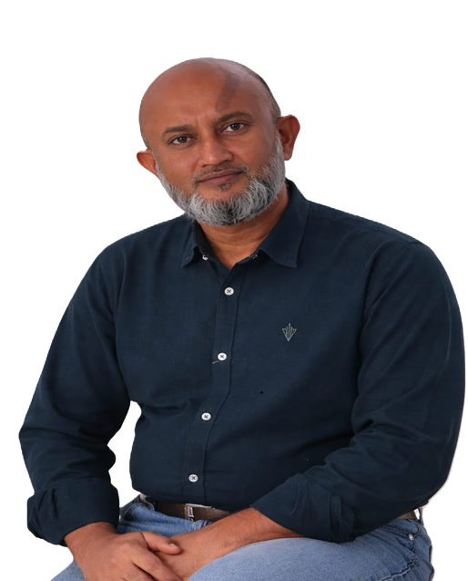
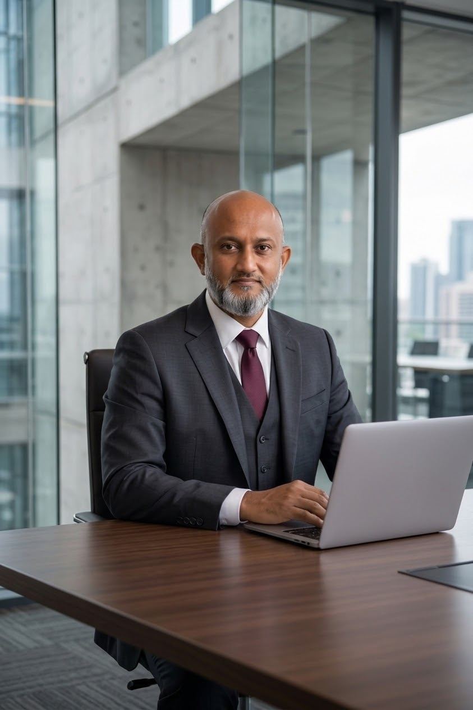
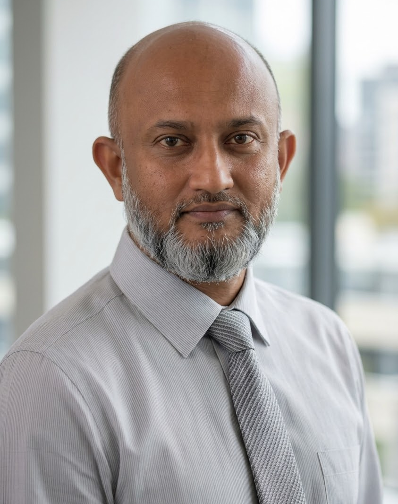

01 / INTERFACES
Front-End
Development
Responsive, accessible interfaces designed to feel intuitive across screen sizes and devices.
01HELLO, I'M REZAUL KARIM
I design and develop responsive websites and custom web solutions — combining thoughtful interfaces, analytical problem-solving and dependable code.


A LITTLE INTRODUCTION
I’m a results-driven Full-Stack Web Developer & Designer with a foundation in Statistics and a passion for building useful digital experiences. I bring together analytical thinking and practical development — from shaping a responsive interface to connecting the back-end logic that brings it to life.
Across 100+ completed web projects, I’ve worked through full-cycle development workflows and collaborated with international clients, focusing on solutions that are clear, maintainable and user-friendly.
CAPABILITIES & CRAFT
A practical mix of front-end craft, back-end capability and a detail-focused mindset — built around the needs of each project.
Responsive, accessible interfaces designed to feel intuitive across screen sizes and devices.
01Reliable server-side functionality, custom scripts and database-driven experiences.
02Custom theme and plugin adjustments, CMS configuration and tailored website customization.
03Organized version control, clear communication and practical project coordination from brief to delivery.
04Make it useful. Make it clear.
Make it last.
THE ROAD SO FAR
A blend of hands-on development experience, structured training and an analytical academic background.

Advanced coursework in HTML5, CSS3, JavaScript, jQuery, Bootstrap, PHP and WordPress, alongside GitHub repository management, client handling, proposal writing and marketplace service delivery.
Practical training in custom website building, layout customization, CSS framing and CMS structure configuration.
CGPA 3.81 / 4.00 · Focus: Quantitative Analysis, Statistical Modeling, Data Interpretation and Computational Logic.
TOOLS I WORK WITH
I choose practical, proven technologies to build maintainable digital products and keep collaboration straightforward.
AREAS OF PRACTICE
These are the areas I work across. For specific project examples and code, explore my GitHub profile.
Clean, responsive websites that present a business with clarity and confidence.
Theme, plugin and CMS customization for practical content management.
<?php
$solution = build();
if ($needs) {
deliver($solution);
}
// made to workPurpose-built scripts, integrations and database-backed functionality.

HAVE A PROJECT IN MIND?
Have an idea, need a website or want to explore a collaboration? I’d be glad to hear what you’re working on.
Start a conversation ↗ISLAMPUR, BHULTA, RUPGANJ, NARAYANGANJ, BANGLADESH